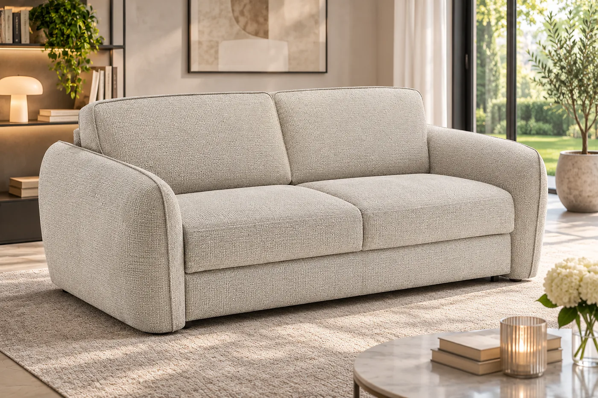
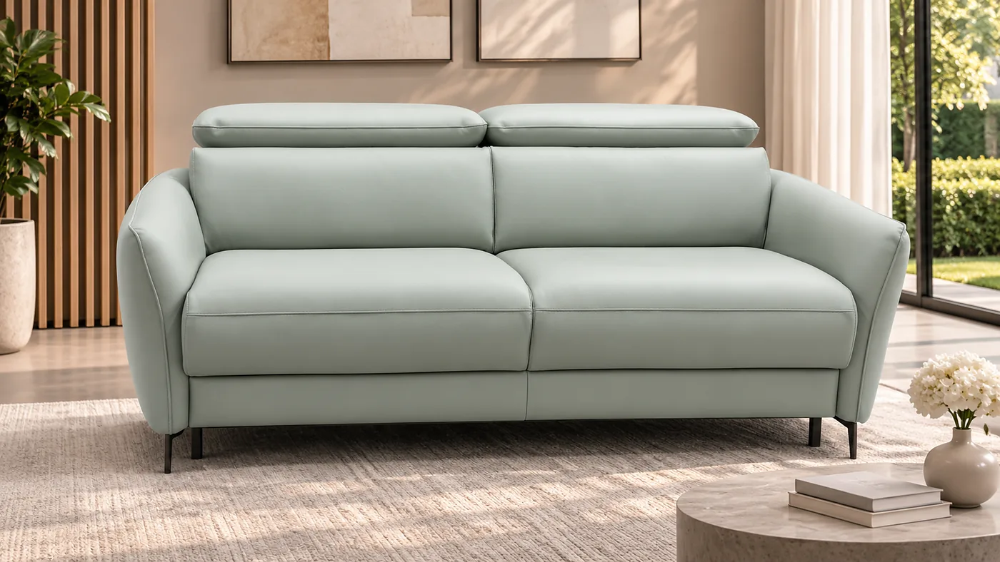
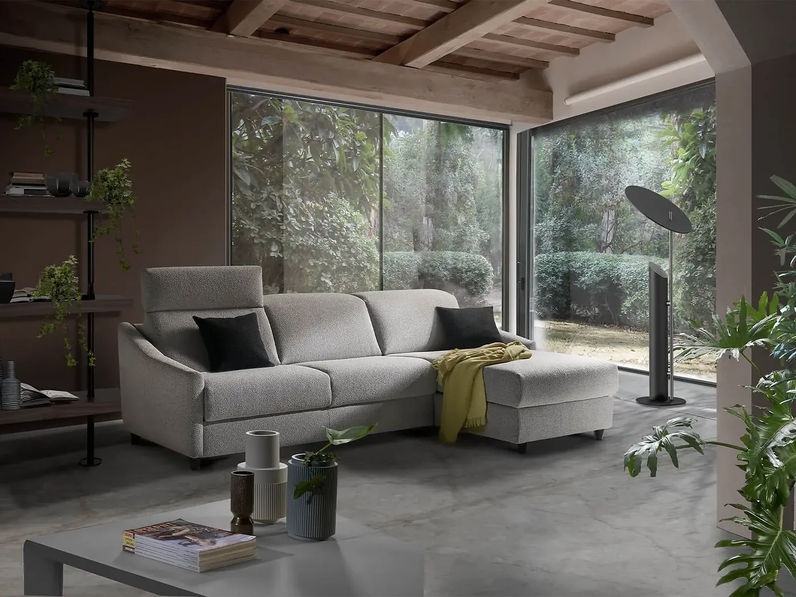
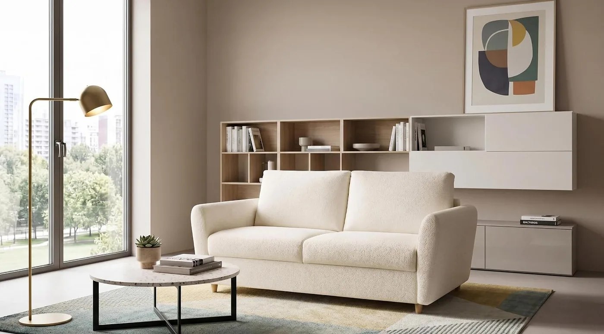

Salon · Literie
Canapés-lits.
Des canapés-lits de fabrication italienne. Une fois fermé, le canapé-lit ressemble à un canapé classique. Ouvert, c’est un lit pour dormir régulièrement.
Les modèles
Quatre canapés-lits, fermés.
-

Diva Divani Long Beach
En tissu, aux accoudoirs arrondis.
-

Diva Divani Rocky
En cuir, avec têtières réglables.
-

Vitarelax Mirage
Avec méridienne à coffre et têtière réglable.
-

Confortplus Jazz
Il s’ouvre par le coussin de dossier.
Mises en ambiance des fabricants.
À l’intérieur
Ce qui fait un bon canapé-lit.
-
Le mécanisme
Un mécanisme d’ouverture italien, de qualité.
-
Le matelas
Un matelas à haute densité, prévu pour un usage régulier. L’épaisseur du matelas et les options de densité dépendent du modèle.
-
Sur commande
Le modèle, le matelas et le revêtement se décident avec vous.
Trois fabricants
Ce qui distingue chaque modèle.
-
Diva Divani : Long Beach et Rocky
Des pieds fins et la ligne d’un canapé. Ils peuvent s’accorder avec un canapé fixe ou un fauteuil, pour un salon harmonisé. Revêtement en tissu, en microfibre ou en cuir.
-
Vitarelax : Mirage
Une méridienne avec coffre et une têtière réglable. Matelas de 140 ou 160 cm de large, épais de 17 cm. En option, un matelas d’une densité de 50 kg/m³, que le fabricant destine à une utilisation quotidienne.
-
Confortplus : Jazz
Il s’ouvre par le coussin de dossier. Matelas de 16 cm. Le revêtement en tissu est entièrement déhoussable. Le Jazz existe aussi en version avec méridienne à coffre.
Caractéristiques relevées sur les fiches des fabricants. Dimensions et options se vérifient au magasin, catalogues en main.
Vos questions
Avant de choisir.
Peut-on dormir tous les jours sur un canapé-lit ?
Cela dépend de la version : demandez si elle est prévue pour un couchage quotidien. Notre guide Quel canapé-lit pour dormir tous les jours ? liste ce qu’il faut vérifier.
Quelle place faut-il devant le canapé ?
Reportez sur votre plan la profondeur du canapé ouvert, et voyez si vous pouvez encore rejoindre la porte.
Faut-il enlever les coussins pour ouvrir ?
Cela dépend du mécanisme. La notice du modèle le précise.
Quel est le prix d’un canapé-lit ?
Pour le prix, venez nous rendre visite au magasin : le choix est large, et nous vous donnons le prix du modèle qui vous intéresse. Vous pouvez aussi nous appeler au 064 46 07 72.
Quels fabricants de canapés-lits proposez-vous ?
Nous proposons Diva Divani, Vitarelax et Confortplus. Notre page Literie les présente.
Voir aussi
Continuer votre choix.
-
Un canapé-lit pour tous les jours ?
Les gestes à essayer, les questions à poser.
Lire le guide -
Les canapés en cuir
Les modèles et les coloris.
Voir les cuirs -
Tous les salons
Les fabricants et les fonctions de confort.
Voir la page Salon
Venez en parler au magasin.
Apportez les mesures de votre pièce : nous regardons avec vous le modèle, le matelas et le revêtement. Avec ou sans rendez-vous.
Partager cette page
- Lundi
- 13h30 – 18h30
- Mardi au samedi
- 10h30 – 18h30
- Dimanche
- Fermé
- Téléphone
- 064 46 07 72
- Livraison
- Par nos soins, dans le Hainaut (Binche, La Louvière, Mons, Charleroi…) et la province de Namur
Nous livrons aussi dans le nord de la France. Ailleurs, dont Bruxelles : sur demande.